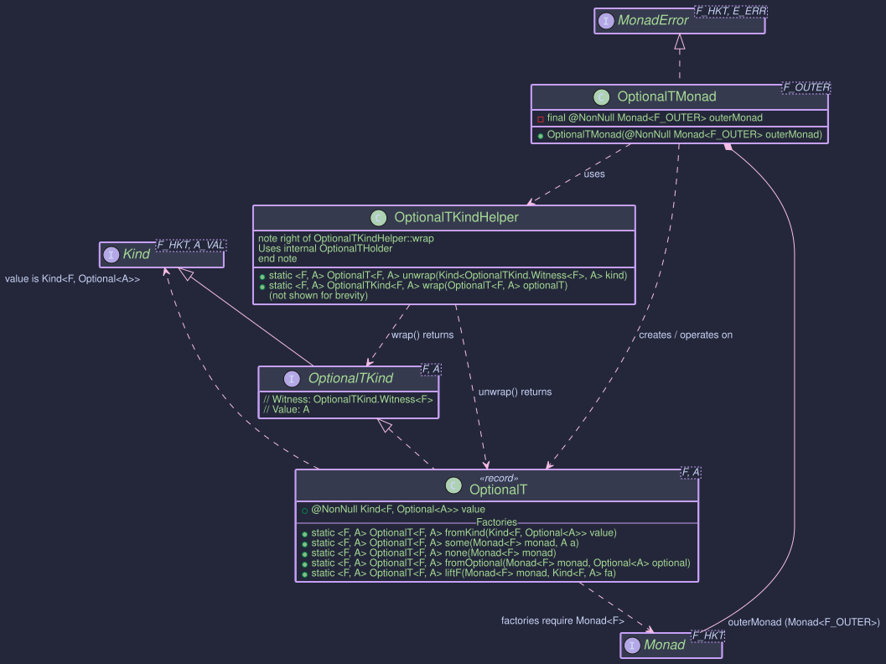

OptionalT - Combining Monadic Effects with java.util.Optional
OptionalT Monad Transformer
The OptionalT monad transformer (short for Optional Transformer) is designed to combine the semantics of java.util.Optional<A> (representing a value that might be present or absent) with an arbitrary outer monad F. It effectively allows you to work with computations of type Kind<F, Optional<A>> as a single, unified monadic structure.
This is particularly useful when operations within an effectful context F (such as asynchronicity with CompletableFutureKind, non-determinism with ListKind, or dependency injection with ReaderKind) can also result in an absence of a value (represented by Optional.empty()).
Structure

OptionalT<F, A>: The Core Data Type
OptionalT<F, A> is a record that wraps a computation yielding Kind<F, Optional<A>>.
public record OptionalT<F, A>(@NonNull Kind<F, Optional<A>> value)
implements OptionalTKind<F, A> {
// ... static factory methods ...
}
F: The witness type of the outer monad (e.g.,CompletableFutureKind.Witness,ListKind.Witness). This monad encapsulates the primary effect of the computation.A: The type of the value that might be present within the **Optional, which itself is within the context ofF.value: The core wrapped value of type **Kind<F, Optional<A>>. This represents an effectful computationFthat, upon completion, yields ajava.util.Optional<A>.
OptionalTKind<F, A>: The Witness Type
For integration with Higher-Kinded-J's generic programming model, OptionalTKind<F, A> acts as the higher-kinded type witness.
- It extends
Kind<G, A>, whereG(the witness for the combinedOptionalTmonad) isOptionalTKind.Witness<F>. - The outer monad
Fis fixed for a particularOptionalTcontext, whileAis the variable type parameter representing the value inside theOptional.
public interface OptionalTKind<F, A> extends Kind<OptionalTKind.Witness<F>, A> {
// Witness type G = OptionalTKind.Witness<F>
// Value type A = A (from Optional<A>)
}
OptionalTKindHelper: Utility for Wrapping and Unwrapping
OptionalTKindHelper is a final utility class providing static methods to seamlessly convert between the concrete OptionalT<F, A> type and its Kind representation (Kind<OptionalTKind.Witness<F>, A>).
public final class OptionalTKindHelper {
// Unwraps Kind<OptionalTKind.Witness<F>, A> to OptionalT<F, A>
public static <F, A> @NonNull OptionalT<F, A> unwrap(
@Nullable Kind<OptionalTKind.Witness<F>, A> kind);
// Wraps OptionalT<F, A> into OptionalTKind<F, A>
public static <F, A> @NonNull OptionalTKind<F, A> wrap(
@NonNull OptionalT<F, A> optionalT);
}
Internally, it uses a private record OptionalTHolder to implement OptionalTKind, but this is an implementation detail.
OptionalTMonad<F>: Operating on OptionalT
The OptionalTMonad<F> class implements MonadError<OptionalTKind.Witness<F>, Void>. This provides the standard monadic operations (of, map, flatMap, ap) and error handling capabilities for the OptionalT structure. The error type is Void because Optional.empty() signifies absence without carrying a specific error value.
- It requires a
Monad<F>instance for the outer monadF, which must be supplied during construction. ThisouterMonadis used to manage and sequence the effects ofF.
// Example: F = CompletableFutureKind.Witness
// 1. Get the Monad instance for the outer monad F
Monad<CompletableFutureKind.Witness> futureMonad = new CompletableFutureMonad();
// 2. Create the OptionalTMonad
OptionalTMonad<CompletableFutureKind.Witness> optionalTFutureMonad =
new OptionalTMonad<>(futureMonad);
// Now 'optionalTFutureMonad' can be used to operate on
// Kind<OptionalTKind.Witness<CompletableFutureKind.Witness>, A> values.
Key Operations with OptionalTMonad:
optionalTMonad.of(value): Lifts a (nullable) valueAinto theOptionalTcontext. The underlying operation isr -> outerMonad.of(Optional.ofNullable(value)). Result:OptionalT(F<Optional<A>>).optionalTMonad.map(func, optionalTKind): Applies a functionA -> Bto the valueAif it's present within theOptionaland theFcontext is successful. The transformation occurs withinouterMonad.map. Iffuncreturnsnull, the result becomesF<Optional.empty()>. Result:OptionalT(F<Optional<B>>).optionalTMonad.flatMap(func, optionalTKind): The primary sequencing operation. It takes a function **A -> Kind<OptionalTKind.Witness<F>, B>(which effectively meansA -> OptionalT<F, B>). It runs the initialOptionalTto getKind<F, Optional<A>>. UsingouterMonad.flatMap, if this yields anOptional.of(a),funcis applied toato get the nextOptionalT<F, B>. Thevalueof this newOptionalT(Kind<F, Optional<B>>) becomes the result. If at any point anOptional.empty()is encountered withinF, it short-circuits and propagatesF<Optional.empty()>. Result:OptionalT(F<Optional<B>>).optionalTMonad.raiseError(null)(since error type isVoid): Creates anOptionalTrepresenting absence. Result:OptionalT(F<Optional.empty()>).optionalTMonad.handleErrorWith(optionalTKind, handler): Allows recovery from anOptional.empty()state withinF. ThehandlerfunctionVoid -> Kind<OptionalTKind.Witness<F>, A>is invoked withnullif an empty state is encountered.
Creating OptionalT Instances
OptionalT instances are typically created using its static factory methods. These often require a Monad<F> instance for the outer monad.
// --- Setup ---
// Outer Monad F = CompletableFutureKind.Witness
Monad<CompletableFutureKind.Witness> futureMonad = new CompletableFutureMonad();
String presentValue = "Data";
Integer numericValue = 123;
// 1. `OptionalT.fromKind(Kind<F, Optional<A>> value)`
// Wraps an existing F<Optional<A>>.
Kind<CompletableFutureKind.Witness, Optional<String>> fOptional =
CompletableFutureKindHelper.wrap(CompletableFuture.completedFuture(Optional.of(presentValue)));
OptionalT<CompletableFutureKind.Witness, String> ot1 = OptionalT.fromKind(fOptional);
// Value: CompletableFuture<Optional.of("Data")>
// 2. `OptionalT.some(Monad<F> monad, A a)`
// Creates an OptionalT with a present value, F<Optional.of(a)>.
OptionalT<CompletableFutureKind.Witness, String> ot2 = OptionalT.some(futureMonad, presentValue);
// Value: CompletableFuture<Optional.of("Data")>
// 3. `OptionalT.none(Monad<F> monad)`
// Creates an OptionalT representing an absent value, F<Optional.empty()>.
OptionalT<CompletableFutureKind.Witness, String> ot3 = OptionalT.none(futureMonad);
// Value: CompletableFuture<Optional.empty()>
// 4. `OptionalT.fromOptional(Monad<F> monad, Optional<A> optional)`
// Lifts a plain java.util.Optional into OptionalT, F<Optional<A>>.
Optional<Integer> optInt = Optional.of(numericValue);
OptionalT<CompletableFutureKind.Witness, Integer> ot4 = OptionalT.fromOptional(futureMonad, optInt);
// Value: CompletableFuture<Optional.of(123)>
Optional<Integer> optEmpty = Optional.empty();
OptionalT<CompletableFutureKind.Witness, Integer> ot4Empty = OptionalT.fromOptional(futureMonad, optEmpty);
// Value: CompletableFuture<Optional.empty()>
// 5. `OptionalT.liftF(Monad<F> monad, Kind<F, A> fa)`
// Lifts an F<A> into OptionalT. If A is null, it becomes F<Optional.empty()>, otherwise F<Optional.of(A)>.
Kind<CompletableFutureKind.Witness, String> fValue =
CompletableFutureKindHelper.wrap(CompletableFuture.completedFuture(presentValue));
OptionalT<CompletableFutureKind.Witness, String> ot5 = OptionalT.liftF(futureMonad, fValue);
// Value: CompletableFuture<Optional.of("Data")>
Kind<CompletableFutureKind.Witness, String> fNullValue =
CompletableFutureKindHelper.wrap(CompletableFuture.completedFuture(null)); // F<null>
OptionalT<CompletableFutureKind.Witness, String> ot5Null = OptionalT.liftF(futureMonad, fNullValue);
// Value: CompletableFuture<Optional.empty()> (because the value inside F was null)
// Accessing the wrapped value:
// Kind<CompletableFutureKind.Witness, Optional<String>> wrappedFVO = ot1.value();
// CompletableFuture<Optional<String>> futureOptional = CompletableFutureKindHelper.unwrap(wrappedFVO);
// futureOptional.thenAccept(optStr -> System.out.println("ot1 result: " + optStr));
Example: Asynchronous Multi-Step Data Retrieval
Consider a scenario where you need to fetch a user, then their profile, and finally their preferences. Each step is asynchronous (CompletableFuture) and might return an empty Optional if the data is not found. OptionalT helps manage this composition cleanly.
public class OptionalTAsyncExample {
// --- Domain Model ---
record User(String id, String name) {}
record UserProfile(String userId, String bio) {}
record UserPreferences(String userId, String theme) {}
// --- Monad Setup ---
static final Monad<CompletableFutureKind.Witness> futureMonad = new CompletableFutureMonad();
static final OptionalTMonad<CompletableFutureKind.Witness> optionalTFutureMonad =
new OptionalTMonad<>(futureMonad);
static final ExecutorService executor = Executors.newFixedThreadPool(2);
// --- Service Stubs (simulating async calls returning Future<Optional<T>>) ---
public static Kind<CompletableFutureKind.Witness, Optional<User>> fetchUserAsync(String userId) {
return CompletableFutureKindHelper.wrap(CompletableFuture.supplyAsync(() -> {
System.out.println("Fetching user " + userId + " on " + Thread.currentThread().getName());
try { TimeUnit.MILLISECONDS.sleep(50); } catch (InterruptedException e) { /* ignore */ }
return "user1".equals(userId) ? Optional.of(new User(userId, "Alice")) : Optional.empty();
}, executor));
}
public static Kind<CompletableFutureKind.Witness, Optional<UserProfile>> fetchProfileAsync(String userId) {
return CompletableFutureKindHelper.wrap(CompletableFuture.supplyAsync(() -> {
System.out.println("Fetching profile for " + userId + " on " + Thread.currentThread().getName());
try { TimeUnit.MILLISECONDS.sleep(50); } catch (InterruptedException e) { /* ignore */ }
return "user1".equals(userId) ? Optional.of(new UserProfile(userId, "Loves HKJ")) : Optional.empty();
}, executor));
}
public static Kind<CompletableFutureKind.Witness, Optional<UserPreferences>> fetchPrefsAsync(String userId) {
return CompletableFutureKindHelper.wrap(CompletableFuture.supplyAsync(() -> {
System.out.println("Fetching preferences for " + userId + " on " + Thread.currentThread().getName());
try { TimeUnit.MILLISECONDS.sleep(50); } catch (InterruptedException e) { /* ignore */ }
// Simulate preferences sometimes missing even for a valid user
return "user1".equals(userId) && Math.random() > 0.3 ? Optional.of(new UserPreferences(userId, "dark")) : Optional.empty();
}, executor));
}
// --- Workflow using OptionalT ---
public static OptionalT<CompletableFutureKind.Witness, UserPreferences> getFullUserPreferences(String userId) {
// Start by fetching the user, lifting into OptionalT
OptionalT<CompletableFutureKind.Witness, User> userOT =
OptionalT.fromKind(fetchUserAsync(userId));
// If user exists, fetch profile
OptionalT<CompletableFutureKind.Witness, UserProfile> profileOT =
OptionalTKindHelper.unwrap(
optionalTFutureMonad.flatMap(
user -> OptionalTKindHelper.wrap(OptionalT.fromKind(fetchProfileAsync(user.id()))),
OptionalTKindHelper.wrap(userOT)
)
);
// If profile exists, fetch preferences
OptionalT<CompletableFutureKind.Witness, UserPreferences> preferencesOT =
OptionalTKindHelper.unwrap(
optionalTFutureMonad.flatMap(
profile -> OptionalTKindHelper.wrap(OptionalT.fromKind(fetchPrefsAsync(profile.userId()))),
OptionalTKindHelper.wrap(profileOT)
)
);
return preferencesOT;
}
// Workflow with recovery / default
public static OptionalT<CompletableFutureKind.Witness, UserPreferences> getPrefsWithDefault(String userId) {
OptionalT<CompletableFutureKind.Witness, UserPreferences> prefsAttemptOT = getFullUserPreferences(userId);
Kind<OptionalTKind.Witness<CompletableFutureKind.Witness>, UserPreferences> recoveredPrefsOTKind =
optionalTFutureMonad.handleErrorWith(
OptionalTKindHelper.wrap(prefsAttemptOT),
(Void v) -> { // This lambda is called if prefsAttemptOT results in F<Optional.empty()>
System.out.println("Preferences not found for " + userId + ", providing default.");
// Lift a default preference into OptionalT
UserPreferences defaultPrefs = new UserPreferences(userId, "default-light");
return OptionalTKindHelper.wrap(OptionalT.some(futureMonad, defaultPrefs));
}
);
return OptionalTKindHelper.unwrap(recoveredPrefsOTKind);
}
public static void main(String[] args) {
System.out.println("--- Attempting to get preferences for existing user (user1) ---");
OptionalT<CompletableFutureKind.Witness, UserPreferences> resultUser1OT = getFullUserPreferences("user1");
CompletableFuture<Optional<UserPreferences>> future1 =
CompletableFutureKindHelper.unwrap(resultUser1OT.value());
future1.whenComplete((optPrefs, ex) -> {
if (ex != null) {
System.err.println("Error for user1: " + ex.getMessage());
} else {
System.out.println("User1 Preferences: " + optPrefs.map(UserPreferences::toString).orElse("NOT FOUND"));
}
});
System.out.println("\n--- Attempting to get preferences for non-existing user (user2) ---");
OptionalT<CompletableFutureKind.Witness, UserPreferences> resultUser2OT = getFullUserPreferences("user2");
CompletableFuture<Optional<UserPreferences>> future2 =
CompletableFutureKindHelper.unwrap(resultUser2OT.value());
future2.whenComplete((optPrefs, ex) -> {
if (ex != null) {
System.err.println("Error for user2: " + ex.getMessage());
} else {
System.out.println("User2 Preferences: " + optPrefs.map(UserPreferences::toString).orElse("NOT FOUND (as expected)"));
}
});
System.out.println("\n--- Attempting to get preferences for user1 WITH DEFAULT ---");
OptionalT<CompletableFutureKind.Witness, UserPreferences> resultUser1WithDefaultOT = getPrefsWithDefault("user1");
CompletableFuture<Optional<UserPreferences>> future3 =
CompletableFutureKindHelper.unwrap(resultUser1WithDefaultOT.value());
future3.whenComplete((optPrefs, ex) -> {
if (ex != null) {
System.err.println("Error for user1 (with default): " + ex.getMessage());
} else {
// This will either be the fetched prefs or the default.
System.out.println("User1 Preferences (with default): " + optPrefs.map(UserPreferences::toString).orElse("THIS SHOULD NOT HAPPEN if default works"));
}
// Wait for async operations to complete for demonstration
try {
TimeUnit.SECONDS.sleep(1);
} catch (InterruptedException e) {
Thread.currentThread().interrupt();
}
executor.shutdown();
});
}
}
This example demonstrates:
- Setting up
OptionalTMonadwithCompletableFutureMonad. - Using
OptionalT.fromKindto lift an existingKind<F, Optional<A>>(the result of async service calls) into theOptionalTcontext. - Sequencing operations with
optionalTFutureMonad.flatMap. If any step in the chain (e.g.,fetchUserAsync) results inF<Optional.empty()>, subsequentflatMaplambdas are short-circuited, and the overall result becomesF<Optional.empty()>. - Using
handleErrorWithto provide a defaultUserPreferencesif the chain of operations results in an emptyOptional. - Finally,
.value()is used to extract the underlyingKind<CompletableFutureKind.Witness, Optional<UserPreferences>>to interact with theCompletableFuturedirectly.
OptionalT simplifies managing sequences of operations where each step might not yield